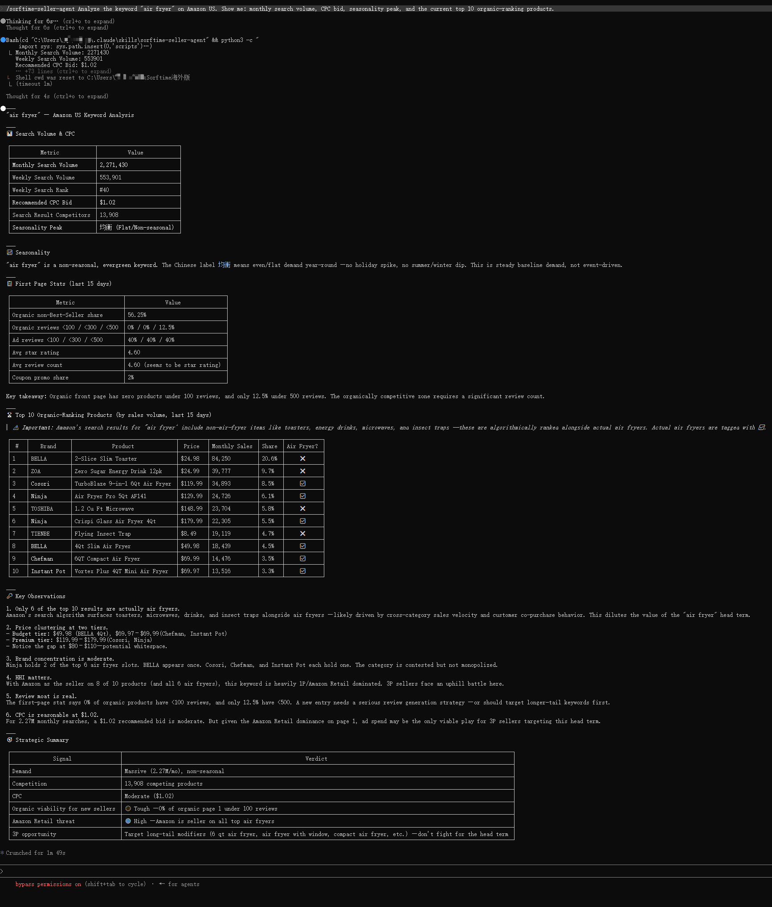

Your ACOS is 40%. You are bidding on keywords you found 6 months ago. You do not know which ones actually convert. This is not optimization — it is guessing with a budget.
Most Amazon sellers treat PPC optimization as a recurring ritual: pull the search terms report, sort by spend, pause the high-ACOS outliers, raise bids on the ones that convert. Repeat next week. The result is a cycle of lagging indicators — by the time you act, the keyword landscape has shifted. Competitors adjusted their bids. New terms emerged. Your data is already stale.
The problem is not your strategy. It is how you get the data to inform it.
Traditional marketplace intelligence tools give you dashboards. You log in, navigate through menus, select filters, export a CSV, open it in a spreadsheet, cross-reference it with your advertising console, then draw conclusions. A routine keyword audit takes 10 to 20 minutes per product. For a catalog of 50 ASINs, that is 8 to 16 hours per week of pure data-moving, not decision-making.
The real cost is invisible: by the time you have finished exporting and analyzing, the opportunity window for a trending keyword has passed. You optimize last week's campaign with last month's data.
The Model Context Protocol (MCP) lets AI agents query live marketplace data directly, without a GUI in between. The Sorftime Seller Agent is an open-source MCP server that exposes 86 marketplace analysis tools — product data, keyword intelligence, traffic structure, competitor analysis, profit calculation — to any MCP-compatible agent: Claude Code, Codex, Cursor, OpenClaw, or any other agent that speaks the MCP protocol.
Instead of opening a browser and clicking through menus, you ask your AI a question and it fetches the data, runs the analysis, and returns actionable output in seconds.
Before (traditional tool):
Log in to seller tool, navigate to keyword module, select marketplace, type seed keyword, click search, view results, export to CSV, open in spreadsheet, cross-reference with campaign manager, identify opportunities. Total: 10 to 20 minutes.
After (MCP):
Ask your AI: "What are the best keyword opportunities for yoga mats on Amazon US?" Results in 20 seconds.
The difference is not speed. It is the removal of friction. When analysis takes 20 seconds instead of 15 minutes, you run it more often, on more products, and act on fresher data.
High ACOS is often a keyword targeting problem. You bid on terms with high search volume but intense competition, or you miss the long-tail terms that convert because they fell below your search volume threshold.
The Sorftime Seller Agent's keyword strategy methodology ranks keywords by an Opportunity Index — a multi-dimensional score that goes beyond search volume alone:
A keyword with 800 monthly searches and low competition can outrank a keyword with 5,000 searches dominated by three established brands. Standard tools would eliminate the smaller keyword at the filtering stage. The Opportunity Index surfaces it.
Here is a practical example using the CLI bundled with the agent:
git clone https://github.com/DannylydST/sorftime-seller-agent.git
cd sorftime-seller-agent
python3 scripts/install.py
# Expand keywords from a seed term and rank by Opportunity Index
python3 scripts/picker.py --mode keyword-extends --keyword "kitchen storage" \
--domain 1 --sort-by opp_score --top 30The output returns the top 30 keywords ranked by Opportunity Score, each with search volume, suggested bid, click concentration, and supply-demand ratio. You can feed these directly into your ad campaigns — selecting terms where demand outpaces supply rather than terms where you compete for scraps against established listings.
A keyword can have perfect metrics and still drive high ACOS if the target ASIN's traffic structure is unhealthy. Some products depend on advertising for 60% or more of their traffic. Pause the ads, and the orders stop. These are not viable long-term assets.
The agent can analyze an ASIN's traffic structure using two MCP tools in combination: product_traffic_terms (organic search keywords and rankings) and competitor_product_keywords (ad-targeted keyword overlap). The result is an Organic Traffic Health Index that reveals which ASINs are genuinely building organic presence and which are sustained entirely by ad spend.
# Example: Check an ASIN's organic vs ad keyword split
# The agent calls product_traffic_terms and competitor_product_keywords
# then computes the ratio of keyword overlap
"""
Agent prompt:
"Analyze the traffic structure of ASIN B08N5WRWNW.
What percentage of its keywords are organic vs ad-driven?
Is this a healthy traffic profile?"
"""This matters because the fastest way to lower ACOS is to not need ads in the first place. Products with strong organic keyword coverage can reduce bids to defensive levels while maintaining overall traffic volume. Products that depend entirely on advertising require a different strategy — improve the listing and build organic ranking before scaling spend.
The Sorftime Seller Agent accesses and organizes marketplace data. It does not make bidding decisions or manage your campaigns. It surfaces keyword opportunities, competitive intelligence, and traffic health metrics that inform your strategy. The decisions remain yours, grounded in data that is current rather than weeks old.
The full MCP server is open source (MIT). Clone the repo, run the installer, and connect it to your preferred AI agent.
git clone https://github.com/DannylydST/sorftime-seller-agent.git
cd sorftime-seller-agent
python3 scripts/install.pyGet a free Sorftime account at open-intl.sorftime.com for trial credits.
Your ACOS is a measurement of how efficiently you convert ad spend into revenue. Improving it requires better input — fresher data, richer signals, less friction between question and answer. An MCP-native approach puts that data pipeline directly into your AI agent, cutting the loop from days to seconds.
Stop optimizing last week's data. Give your AI agent the tools it needs to work with what is happening now.
[1] Sorftime Seller Agent GitHub repository — https://github.com/DannylydST/sorftime-seller-agent
[2] Sorftime open-intl registration — https://open-intl.sorftime.com
[3] Keyword Strategy methodology card — sorftime-seller-agent/references/methodology-cards/comprehensive/keyword-strategy.md
[4] Traffic Structure methodology card — sorftime-seller-agent/references/methodology-cards/comprehensive/traffic-structure.md
[5] MCP specification — https://modelcontextprotocol.io